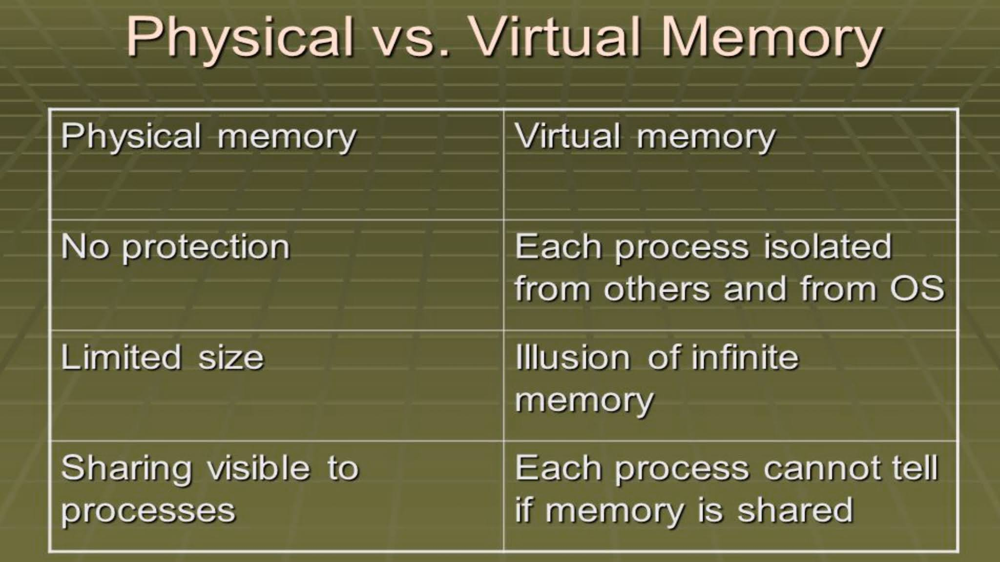
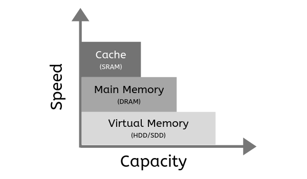

The difference between physical memory and virtual memory.
physical memory and virtual
memory.
Virtual memory and physical memory serve distinct roles in a computer system. Physical memory (RAM) is
the actual hardware that provides temporary storage for active data, while virtual memory is a reserved
space on the storage device (usually a hard drive or SSD) used when physical memory is exhausted.

Virtual memory components:
read
Three Main Parts of Virtual Memory. As implied above, virtual memory consists of three main parts.
First, there is the main memory (RAM), which holds recently used chunks (pages) of memory. Second, there
is the secondary memory (disk), which stores the chunks (pages) not currently being used.
